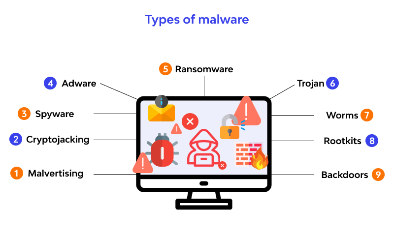
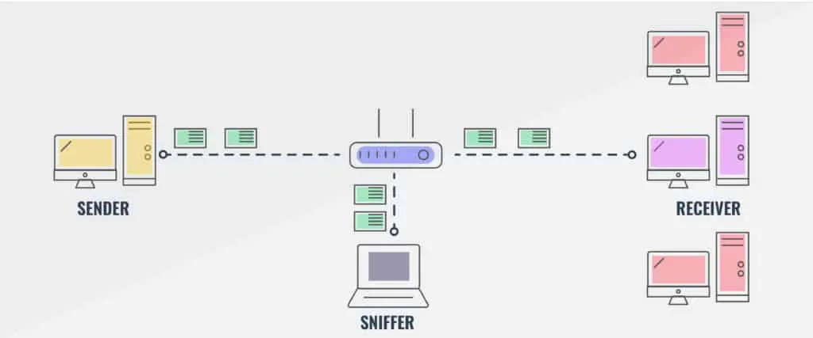

إبراهيم أبوهشهش
الرقم الجامعي: 1221140
المهارات: تعلم الآلة، بايثون
المشاريع: روبوت محادثة، آلة حاسبة
الهوايات: الشطرنج، البرمجة

عبدالله مطور
الرقم الجامعي: 1223061
المهارات: جافا، حل المشكلات
المشاريع: التجارة الإلكترونية، تطوير الألعاب
الهوايات: كرة القدم، السباحة
المهاجمون: البرمجيات الخبيثة
البرمجيات الخبيثة (Malware) يمكن أن تصيب الأجهزة بعدة طرق:
- فيروس: عدوى ذاتية الانتشار تنتشر عبر تنفيذ كائنات مثل مرفقات البريد الإلكتروني.
- دودة: عدوى ذاتية الانتشار تستلم الكائنات وتنفذها بشكل سلبي.
بالإضافة إلى ذلك، يمكن لبرمجيات التجسس أن تقوم بـ:
- تسجيل ضغطات المفاتيح
- تعقب المواقع التي تمت زيارتها
- رفع البيانات المسروقة إلى موقع تجميع
وقد تصبح الأجهزة المصابة جزءًا من شبكة بوت نت تستخدم لإرسال البريد المزعج أو شن هجمات حجب الخدمة (DDoS).

المهاجمون: هجمات حجب الخدمة (DoS)
هجمات حجب الخدمة (DoS) تغمر الخادم أو المورد الشبكي بحركة مرور وهمية مما يجعله غير متاح للمستخدمين الشرعيين.
خطوات الهجوم:
- اختيار الهدف
- اختراق أجهزة متصلة بالشبكة (بوت نت)
- إرسال كميات هائلة من الحزم من الأجهزة المخترقة

المهاجمون: اعتراض الحزم
من خلال التنصت على الحزم (Packet Sniffing)، يمكن للمهاجمين التقاط حركة المرور على الشبكة وسرقة معلومات حساسة مثل كلمات المرور، خاصة في:
- وسائط البث (مثل الإيثرنت المشترك أو الشبكات اللاسلكية)
واجهة الشبكة في وضع الاستقبال الشامل (Promiscuous Mode) تستطيع قراءة جميع الحزم المارة. من أشهر أدوات التنصت برنامج Wireshark.

المهاجمون: انتحال الهوية (IP Spoofing)
انتحال عنوان IP يعني إرسال حزم بيانات بعنوان مصدر مزيف لإخفاء هوية المهاجم.